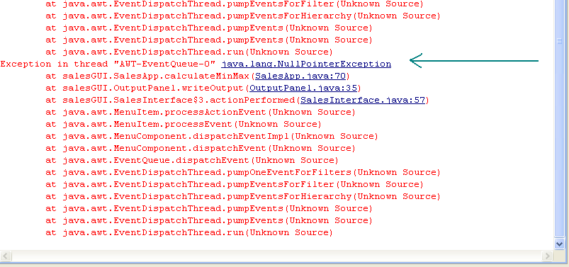
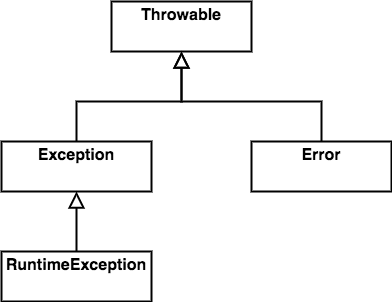
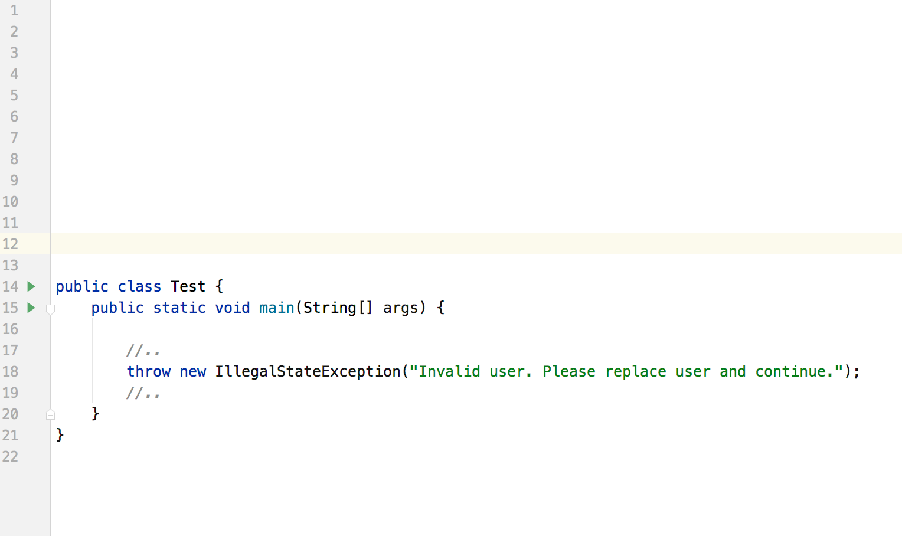
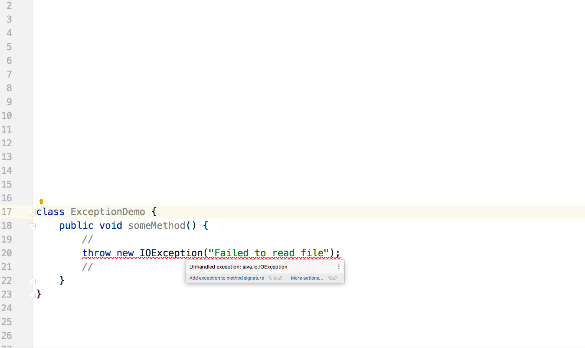
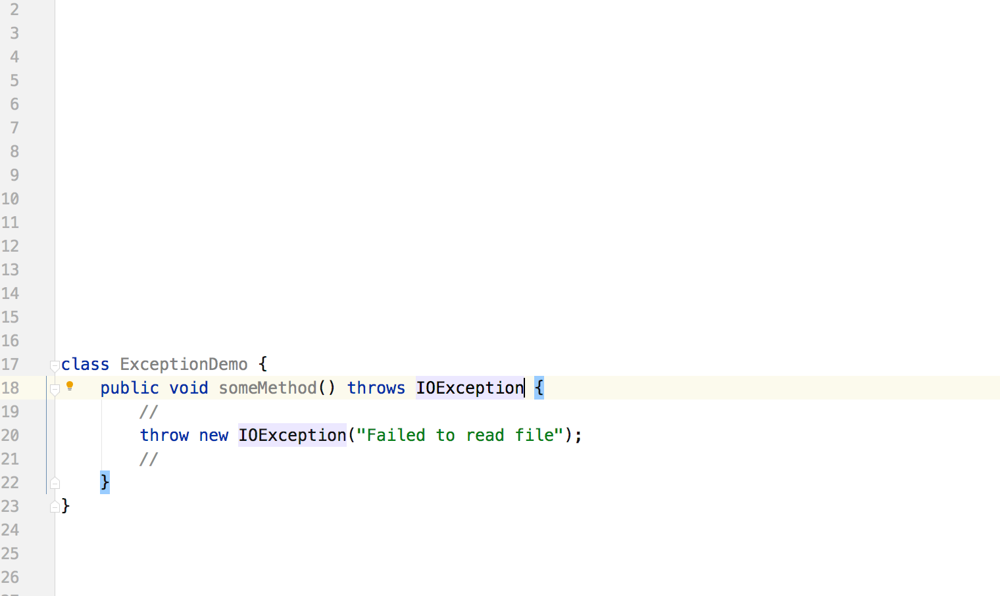
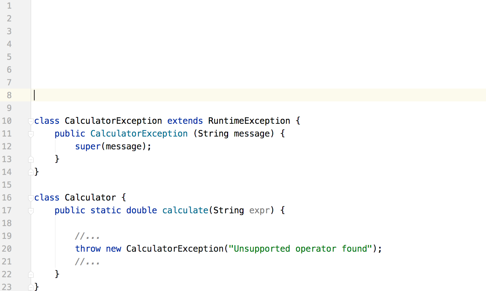

В любой программе может случиться ошибка. Для этого есть 100500 причин.
От всех ошибок не застраховаться, а следовательно нашим программам иногда приходиться с ними сталкиваться и как-то на них реагировать
К счастью есть решение.
Оно состоит в использовании исключений.
Исключения - это событие, которое случается в процессе работы программы и прерывает стандартный ход ее исполнения.

Исключение в Java - это объект,
экземпляр какого-то класса.
Все классы исключений наследуются от java.lang.Throwable

Ключевое свойство экземпляров Throwable и его подклассов - это возможность быть "брошенными".

Исключения в Java деляться на три группы
это ошибки виртуальной машины.
проверяемые исключения
непроверяемыми исключениями
Проверяемые исключения - особый контроль компилятора
Он внимательно следит за тем, чтобы такие исключения декларировались и обрабатывались.

Проверяемые исключения - особый контроль компилятора
Он внимательно следит за тем, чтобы такие исключения декларировались и обрабатывались.

Непроверяемые исключения такого внимания компилятора не получают.
Их можно свободно бросать из любой точки программы не декларируя.
Собственное исключение
